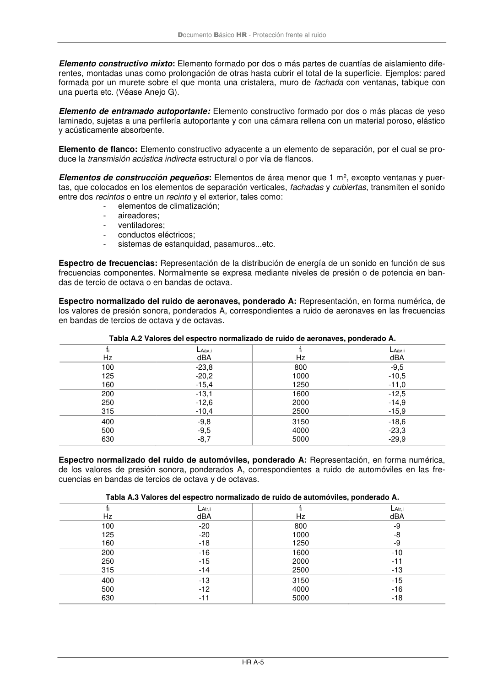

DB-HR Protección frente al ruido · edición 2019-12-20 · capa oficial
Documento DB-HR-oficial · SHA-256 del PDF a67baeca5138bb1f121f797d23a79a4557bd9ac4abacd954024893e05411eeab
Página física 47 de 80.
Copia fiel del PDF fuente · Fuente oficial
Ficha de la disposición en la fuente oficial
Formato: Texto de la página (Markdown)
Documento Básico HR - Protección frente al ruido HR A-5 Elemento constructivo mixto: Elemento formado por dos o más partes de cuantías de aislamiento dife- rentes, montadas unas como prolongación de otras hasta cubrir el total de la superficie. Ejemplos: pared formada por un murete sobre el que monta una cristalera, muro de fachada con ventanas, tabique con una puerta etc. (Véase Anejo G). Elemento de entramado autoportante: Elemento constructivo formado por dos o más placas de yeso laminado, sujetas a una perfilería autoportante y con una cámara rellena con un material poroso, elástico y acústicamente absorbente. Elemento de flanco: Elemento constructivo adyacente a un elemento de separación, por el cual se pro- duce la transmisión acústica indirecta estructural o por vía de flancos. Elementos de construcción pequeños: Elementos de área menor que 1 m2, excepto ventanas y puer- tas, que colocados en los elementos de separación verticales, fachadas y cubiertas, transmiten el sonido entre dos recintos o entre un recinto y el exterior, tales como: - elementos de climatización; - aireadores; - ventiladores; - conductos eléctricos; - sistemas de estanquidad, pasamuros...etc. Espectro de frecuencias: Representación de la distribución de energía de un sonido en función de sus frecuencias componentes. Normalmente se expresa mediante niveles de presión o de potencia en ban- das de tercio de octava o en bandas de octava. Espectro normalizado del ruido de aeronaves, ponderado A: Representación, en forma numérica, de los valores de presión sonora, ponderados A, correspondientes a ruido de aeronaves en las frecuencias en bandas de tercios de octava y de octavas. Tabla A.2 Valores del espectro normalizado de ruido de aeronaves, ponderado A. fi Hz LAav,i dBA fi Hz LAav,i dBA 100 125 160 -23,8 -20,2 -15,4 800 1000 1250 -9,5 -10,5 -11,0 200 250 315 -13,1 -12,6 -10,4 1600 2000 2500 -12,5 -14,9 -15,9 400 500 630 -9,8 -9,5 -8,7 3150 4000 5000 -18,6 -23,3 -29,9 Espectro normalizado del ruido de automóviles, ponderado A: Representación, en forma numérica, de los valores de presión sonora, ponderados A, correspondientes a ruido de automóviles en las fre- cuencias en bandas de tercios de octava y de octavas. Tabla A.3 Valores del espectro normalizado de ruido de automóviles, ponderado A. fi Hz LAtr,i dBA fi Hz LAtr,i dBA 100 125 160 -20 -20 -18 800 1000 1250 -9 -8 -9 200 250 315 -16 -15 -14 1600 2000 2500 -10 -11 -13 400 500 630 -13 -12 -11 3150 4000 5000 -15 -16 -18

Datos candidatos: compruebe celdas y notas en el PDF.